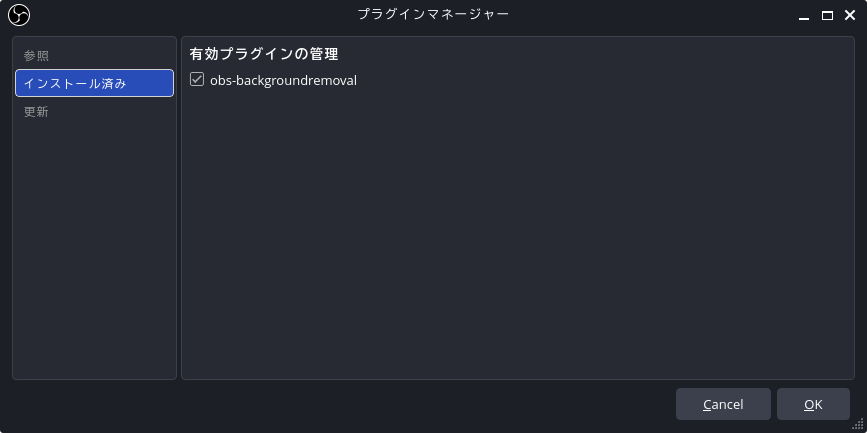
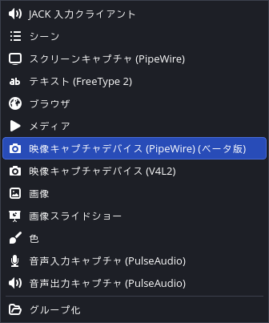
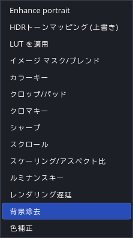
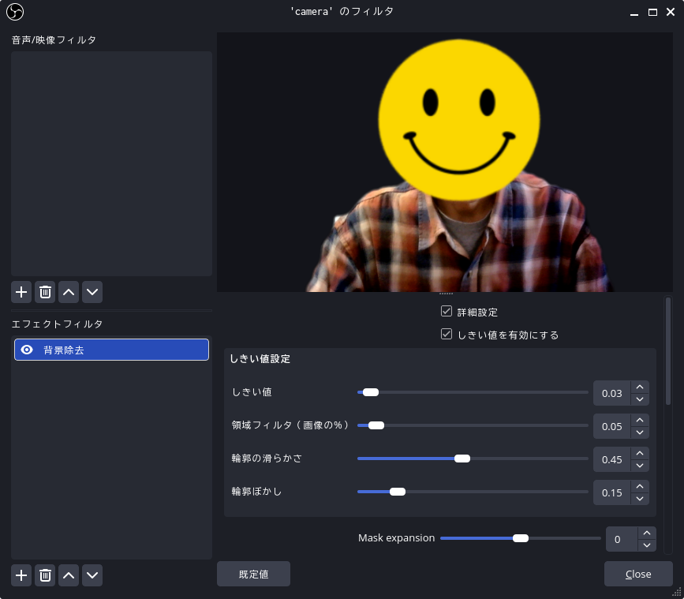
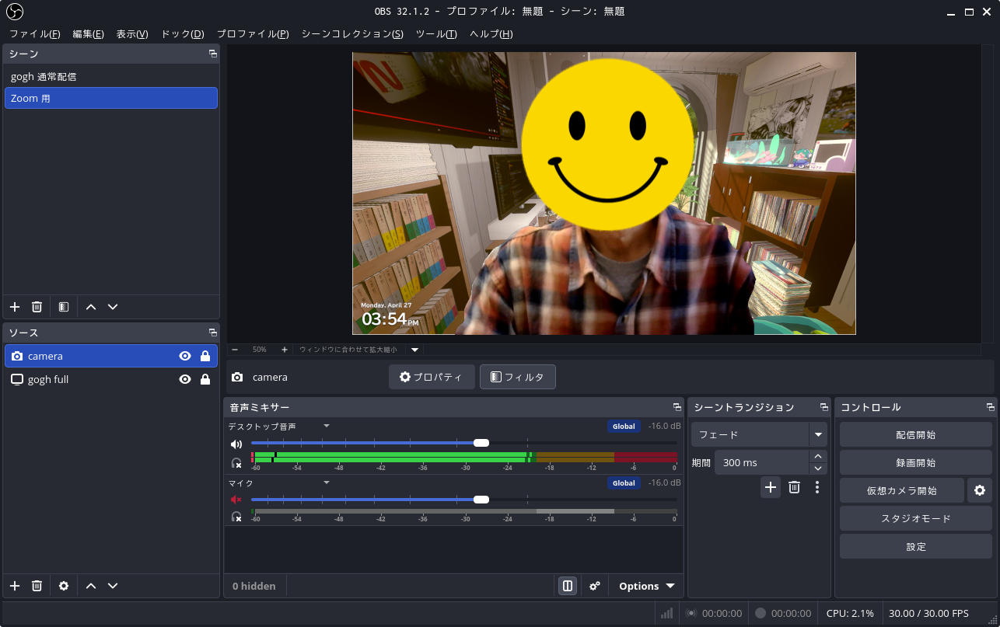
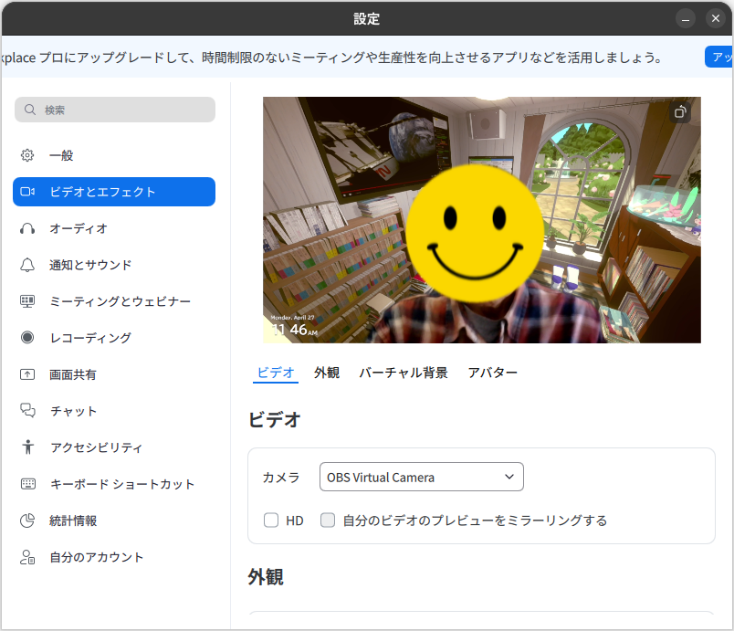

OBS 合成映像を Zoom に出す

この前の読書会のときに Zoom カメラの背景を gogh のスクリーンショットにしてたんだけど，どうせなら背景が動いたらいいよね。 でも Zoom 単体の機能では Web カメラの背景を削除することはできるけど，背景として別の動画を合成するのは難しそう，というかできない？ じゃあ OBS Studio の仮想カメラの機能を使って OBS の合成映像を Zoom に出せばいいんじゃないか？ というわけで，実際にやってみることにした。
なお，今回のスペックは以下の通り：
- PC: ショップブランド PC
- プロセッサ: AMD Ryzen5 PRO 4650G (6 Cores / 12 Threads with Radeon Graphics)
- メモリ: 32GB
- ストレージ: 512GB SSD
- Web カメラ: サンワダイレクト 400-CAM086
- OS: Ubuntu Desktop 25.10
- OBS Studio: 32.1.2 (64 bit)
ゲーム PC 未満のスペックだが，日常的な作業では困らない程度。
Flatpak 版 OBS Studio に換装する
以前 Streamplace でゲーム配信した際は Windows 版の OBS Studio を使ったのだが（その前の gogh 内にストリーム配信したときは Windows 環境だったので），その後 Ubuntu に OBS Studio をインストールして Streamplace に配信できることを確認している。 Windows を入れているミニ PC はスペックが貧弱でゲームと OBS Studio を同時に動かすのは厳しいので OBS Studio は Ubuntu 環境で動かしたい。
いわゆるグリーンバック背景とかの設備無しで Web カメラ映像の背景部分を分離・透過させるには Background Removal (obs-backgroundremoval) プラグインを導入することがほとんど唯一の選択のようだ。 obs-backgroundremoval はバイナリ提供だが Linux 版も用意されている。
ただ，私の環境では obs-backgroundremoval のインストールに失敗してしまった。 私は APT 版の OBS Studio をインストールしていて obs-backgroundremoval もダウンロードした .deb ファイルを使ってインストールしたのだが，ライブラリの互換性とか色々と面倒みたいで， Kagi Assistant にも「Flatpak 版を入れるのが一番確実」などと言われてしまった。
Flatpak の特徴
Ubuntu のパッケージマネージャーには主に APT, Snap, Flatpak の3つがあるが，それぞれにメリット・デメリットがある。 Kagi Assistant に簡単にまとめてもらった。
| 特徴 | APT (deb) | Snap | Flatpak |
|---|---|---|---|
| 管理主体 | 各ディストリビューション | Canonical社 (Ubuntu) | コミュニティ (非営利) |
| 依存関係 | システム共有 (競合のリスクあり) | 自己完結 (独立) | 自己完結 (独立) |
| 更新速度 | OSのサイクルに依存 (遅め) | 非常に速い | 非常に速い |
| サンドボックス | なし (システムに直接アクセス) | あり (厳格) | あり (柔軟に調整可能) |
| 起動速度 | 非常に速い | やや遅い (圧縮解凍のため) | 速い |
| 主な用途 | システムツール、基本ソフト | サーバー、CLI、GUIアプリ | デスクトップアプリ (GUI) |
| 透明性 | オープンソース | サーバー側がクローズド | 完全オープンソース |
Snap や Flatpak 版のアプリはサンドボックス内に隔離されているため Ubuntu システムの内部状態との競合を避けることができる（セキュリティ上もより安全）。 この特徴は GUI アプリのほうが効いてくるだろう。 だから Flatpak 版を入れろと言ってくるわけか。
上の表に対して「オープンソースと完全オープンソースの違いは何？」と訊いたらリポジトリ管理の違いを意図しているらしい。
つまり APT の公式リポジトリ管理はディストリビュータの制御下にあるが， Flatpak は flathub も含めて完全にコミュニティによる管理である，ということらしい。
なのでオープンソースの定義（Open Source Definition; OSD）とは関係がない。
うーん。 ホンマにそんな言い回しがあるのか？
Flatpak の導入
Flatpak は 既定では Ubuntu にインストールされていない。 ので，まずは Flatpak のインストールから。
$ sudo aptitude install flatpak
$ flatpak --version
Flatpak 1.16.1
よしよし。 OBS Studio を入れるには
$ sudo flatpak install flathub com.obsproject.Studio
とすればいいのだが， Flatpak インストール直後の状態でこれをやると
$ sudo flatpak install flathub com.obsproject.Studio
Looking for matches…
error: No remote refs found for ‘flathub’
と怒られる。
そこで flathub リポジトリを参照する設定を加える。
$ sudo flatpak remote-add --if-not-exists flathub https://flathub.org/repo/flathub.flatpakrepo
これで準備OK。
Flatpak 版 OBS Studio に換装する
まず APT 版をアンインストールしておく。
$ sudo aptitude remove obs-studio
あとで分かったのだが， APT 版と Flatpak 版はユーザデータの格納場所（構造も？）が異なるため，そのままではデータを引き継げない（手動でコピー&ペーストすればいいのかもしれないが）。
- APT 版のユーザデータ:
~/.config/obs-studio - Flatpak 版のユーザデータ:
~/.var/app/com.obsproject.Studio/config/obs-studio
APT 版のユーザデータをすっぱり諦めるのなら remove じゃなくて purge でもいいかもしれない。
改めて OBS Studio のインストールから。
$ sudo flatpak install flathub com.obsproject.Studio
Looking for matches…
Required runtime for com.obsproject.Studio/x86_64/stable (runtime/org.freedesktop.Platform/x86_64/25.08) found in remote flathub
Do you want to install it? [Y/n]:y
com.obsproject.Studio permissions:
ipc network fallback-x11 pulseaudio wayland x11 devices
file access [1] dbus access [2]
[1] host, xdg-run/pipewire-0
[2] org.a11y.Bus, org.freedesktop.Flatpak, org.freedesktop.Notifications, org.kde.StatusNotifierWatcher
ID Branch Op Remote Download
1. [✓] org.freedesktop.Platform.GL.default 25.08 i flathub 141.4 MB / 142.4 MB
2. [✓] org.freedesktop.Platform.GL.default 25.08-extra i flathub 25.6 MB / 142.4 MB
3. [✓] org.freedesktop.Platform.Locale 25.08 i flathub 1.7 MB / 379.0 MB
4. [✓] org.freedesktop.Platform.codecs-extra 25.08-extra i flathub 14.1 MB / 14.3 MB
5. [✓] org.gtk.Gtk3theme.Yaru 3.22 i flathub 139.3 kB / 191.5 kB
6. [✓] org.freedesktop.Platform 25.08 i flathub 201.3 MB / 252.7 MB
7. [✓] com.obsproject.Studio stable i flathub 192.3 MB / 202.8 MB
Installation complete.
再ログイン（または再起動）するとアプリの一覧（ダッシュボタンを押すとアイコンの一覧が表示されるやつ）に OBS Studio のアイコンが追加されているはず。 アイコンをクリックして起動確認しておく。
Background Removal プラグインのインストール
obs-backgroundremoval のインストールも Flatpak で行う。
$ sudo flatpak install com.obsproject.Studio.Plugin.BackgroundRemoval
Looking for matches…
ID Branch Op Remote Download
1. [✓] com.obsproject.Studio.Plugin.BackgroundRemoval stable i flathub 111.8 MB / 112.0 MB
Installation complete.
インストール後 OBS Studio を起動し直し [ツール] → [プラグインマネージャー] を開いて obs-backgroundremoval がインストール済みで有効になっていることを確認する。

{kind=link}
Windows 版 obs-backgroundremoval にはインストーラはなく zip 圧縮ファイルで提供されている。
インストールするには zip ファイルを展開し obs-backgroundremoval\ フォルダ以下をフォルダごと c:\ProgramData\obs-studio\plugins\ フォルダにコピーする。
Web カメラ映像の加工
まずは「ソース」に Web カメラを追加する。

{kind=link}
ソースの追加より
ソースに追加したカメラの「フィルタ」を開いて「エフェクトフィルタ」から「背景除去（Background Removal）」を追加する（「音声/映像フィルタ」は弄らなくてよい1）。

{kind=link}
あとはパラメータをいじっていい感じにすればよい。

{kind=link}
背景除去より
（緩く顔出し NG ってことでご容赦。まぁくたびれたオッサンの顔なんか見たくないやろw）
背景の gogh のゲーム画面と合わせるとこんな感じになる。

{kind=link}
合成結果より
おー。 ちゃんと部屋に居るっぽい（笑）
Zoom へ出力する
OBS Studio 側で「仮想カメラ開始」した状態で Zoom 側のカメラを「OBS Virtual Camera」に設定する。 こんな感じ。

{kind=link}
おそらく Discord や Microsoft Teams なども似たような感じで行ける筈。
よし！ じゃあ来月のオンライン読書会はこれで行こう。
ブックマーク
他に参考にしたツール
- Webcamoid, The ultimate webcam suite!
- webcamoid/webcamoid: Webcamoid is a full featured and multiplatform camera suite. · GitHub
Webcamoid はオープンソース（GPLv3）の製品で Linux を含むクロスプラットフォームでバイナリが提供されている。 Ubuntu では APT でインストール可能だが，専用のインストーラ（有料）が用意されているらしい？
$ aptitude search webcamoid
p webcamoid - full featured webcam capture application
p webcamoid-data - icons and locale files for webcamoid
p webcamoid-plugins - full featured webcam capture application - plugins
多くのエフェクトを持ち仮想カメラ機能も備える。 複数のカメラを同時に管理・切り替えできる。 ただ背景除去についてはグリーンバックなどの設備があることが前提のようで（ChromaKey エフェクトなら不完全ながら可能らしいが），今回の用途には合わなかった。
- Webcamoid のダウンロードと使い方 - ｋ本的に無料ソフト・フリーソフト
- Webcamoid 8.5、Webカメラ用のシンプルなクロスプラットフォームアプリケーション : 現在は v9
- ウェブカメラを最大限に活用するための6つの最高のLinuxカメラアプリ : Webcamoid 以外にもいくつかのカメラアプリが紹介されている。
参考

- サンワダイレクト WEBカメラ マイクなし 画角60度 フルHD 1080P 200万画素 三脚対応 Zoom/Teams対応 ケーブル3m 400-CAM086
- サンワダイレクト
- エレクトロニクス
- B08TC3NR9L (ASIN), 4969887781586 (EAN)
- 評価
マイクなんて飾りですよ。エラい人には分からんのです（笑） リモート会議で使うのなら必要十分な性能。
-
色々とググってみると「背景除去」を「音声/映像フィルタ」から追加するみたいな記述ばっかりで「そんなのねーよ！」とひたすら悩んだ。どうも古いバージョンでは，本当に「音声/映像フィルタ」から Background Removal を追加して抜いた背景の色を（緑などに）指定し，その上で「エフェクトフィルタ」の「クロマキー」で指定した色を透過にする手順だったようだ。 ↩︎